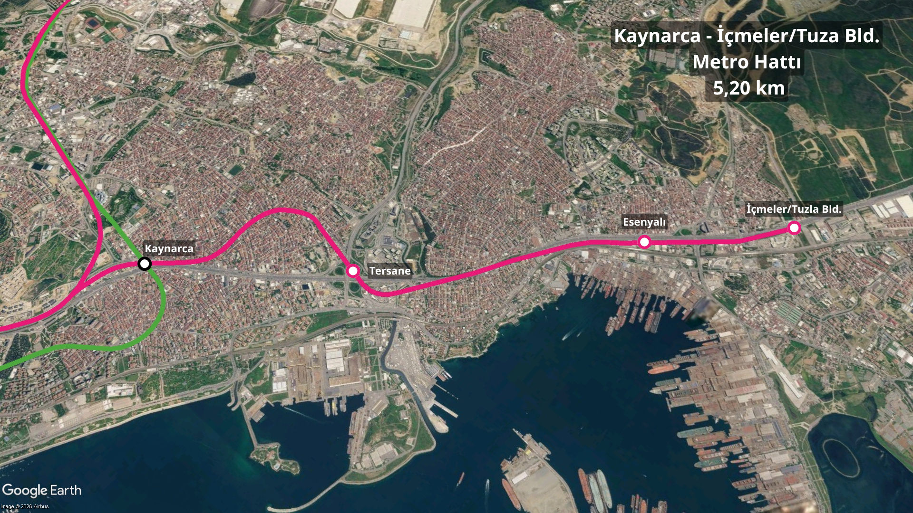

Proje Halindeki Raylı Sistem Hatları
İstanbul Anadolu Yakası'nda projelendirme çalışmaları devam eden raylı sistem hatları.
 M4 Kaynarca - İçmeler/Tuzla Belediyesi Metro Hattı Uzatması
M4 Kaynarca - İçmeler/Tuzla Belediyesi Metro Hattı Uzatması
Öngörülen İhale Tarihi: 2029 Sonrası
Projelendiren: İBB
Uzunluk:5,20 Km
İstasyon Sayısı:3
2017 yılında Tavşantepe-Tuzla Olarak bütün halinde ihale edilen hattın inşa çalışmaları 29 Aralık 2017'de durdurulmuştur. İnşaat yeniden başlatımaya çalışılmış ancak ödenek yetersizlği sebebiyle başlatılamamıştır.3 şubat 2020 tariihnde bulunan kredi ile çalışmalar yeniden başlatılmıştır.2022 yılında Yüklenici firmanın sözleşmeyi feshetmiştir.Tekrarlanan ihaleye kaynarca sonrası etap dahil edikmemiştir.Proje güzergahı ağır bir revizyonla D-100 Karayolu takip edecek şekilde güncellenmiştir.İbb tarafından 2029 sonrasında inşaatına başlanacak hatlar arasındadır.

 M4-M10 Sabiha Gökçen Hvl. - Kurtköy YHT/ViaPort Metro Hattı Uzatması
M4-M10 Sabiha Gökçen Hvl. - Kurtköy YHT/ViaPort Metro Hattı Uzatması
 M5 Sultanbeyli - Kurtköy YHT/ViaPort Metro Hattı Uzatması
M5 Sultanbeyli - Kurtköy YHT/ViaPort Metro Hattı Uzatması
 M13 Emek - Söğütlüçeşme Metro Hattı Uzatması
M13 Emek - Söğütlüçeşme Metro Hattı Uzatması
 M14 Bosna Bulvarı - Ümraniye Spor Köyü Metro Hattı Uzatması
M14 Bosna Bulvarı - Ümraniye Spor Köyü Metro Hattı Uzatması

 M Ümraniye - Ortaçeşme Metro Hattı
M Ümraniye - Ortaçeşme Metro Hattı
 T Üsküdar - Kadıköy - Maltepe Tramvay Hattı
T Üsküdar - Kadıköy - Maltepe Tramvay Hattı